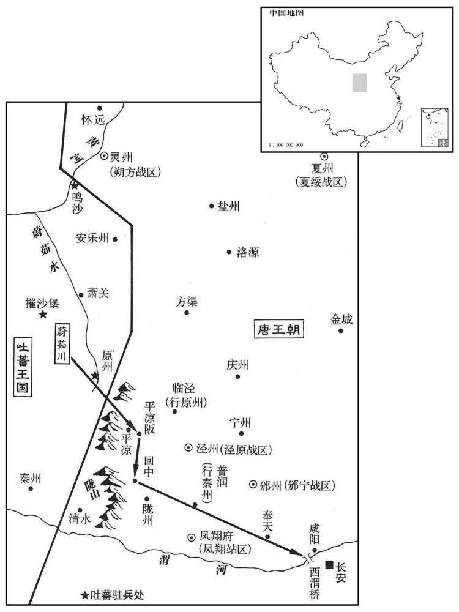

公元831年资治通鉴：本年记事、原文与白话对照
按原书编年位置阅读；追叙和史论不等于本年发生的事件。白话采用所据译本，缺译不以生成译文补齐。
卷244 · 本年记事
公元831年 · 唐文宗元圣昭献孝皇帝太和五年
五年〔（辛亥、八三一）〕
上传原文的注释括号有异常，字符原样保留；无法可靠划分的段落默认全文显示。
本年事件索引（现代整理）
- 文宗赐沧、齐、德节度为义昌军
- 幽州军变，杨志诚驱逐李载义并自领留后
- 司马光批评文宗放任将帅与士卒废置主帅
- 新罗王金彦升卒，子金景徽继位
- 文宗与宋申锡密谋诛除宦官，王璠泄露计划
- 豆卢着诬告宋申锡谋立漳王李凑
- 旬休时文宗召见宰相，宋申锡发现自己不在召命中，随后被罢为右庶子
- 宋申锡案审结后群臣力请外廷复核，文宗贬漳王李凑与宋申锡
- 文宗任李载义为山南西道节度使、杨志诚为幽州节度使
- 韦温反对以罚俸代替修缮太庙失职责任，文宗令有司修葺
- 李德裕遣使赴南诏索回被掳百姓四千人
- 文宗任崔郾为鄂岳观察使，崔郾整军剿除群盗
- 李德裕裁汰蜀地老弱士卒并整训军队、改良兵器
- 悉怛谋率维州部众归降唐朝，牛僧孺主张守信而文宗命送还
- 李德裕奏报南诏寇巂州并攻陷三县

本年形势与背景参考图
春，正月，丁巳，赐沧、齐、德节度名义昌军。〔张孝忠以程日华为沧州刺史。朱滔之乱，沧、定隔绝，日华以沧州自通于朝廷。贞元三年，以日华为横海军节度，领沧、景二州。元和十三年，王承宗献德、棣二州，而横海军领沧、景、德、棣四州；长庆元年，省景州；明年，复领景州；太和元年，增领齐州；明年，以棣州隶淄青、平卢节度；又明年，罢横海节度，更置齐德节度；寻平李同捷，得沧州，更号沧、齐、德节度；是年，赐号义昌军。〕
春季，正月，丁巳（十八日），唐文宗赐沧、齐、德节度使名为义昌军节度使。
庚申，卢龙监军奏李载义与敕使宴于球场后院，副兵马使杨志诚与其徒呼噪作乱，载义与子正元奔易州；志诚又杀莫州刺史张庆初。〔宋白曰：幽州，南至莫州二百八十里。〕上召宰相谋之，牛僧孺曰：「范阳自安、史以来，非国所有，刘总蹔献其地，〔事见二百四十一卷穆宗长庆元年。〕朝廷费钱八十万缗而无丝毫所获。今日志诚得之，犹前日载义得之也；〔敬宗宝历二年，李载义得范阳，事见上卷。〕因而抚之，使捍北狄，不必计其逆顺。」上从之。载义自易州赴京师，上以载义有平沧景之功，〔平沧、景见上三年。〕且事朝廷恭顺；二月，壬辰，以载义为太保，同平章事如故。以杨志诚为卢龙留后。
庚申（二十一日），卢龙（幽州）监军奏报：节度使李载义在球场后院设宴接待朝廷派来的敕使，副兵马使杨志诚乘机和他的党羽喧哗作乱，李载义和他的儿子李正元逃奔易州。杨志诚又擅自杀死莫州刺史张庆初。唐文宗召集宰相商议对策，牛僧孺说：“幽州自从安禄山、史思明以来，一直割据跋扈，实际上已不属于朝廷管辖了。穆宗皇帝在位时，幽州节度使刘总曾经归顺朝廷，然而，朝廷花费了八十万缗钱，却一无所获。所以，今天杨志诚夺取幽州，和上次李载义夺取一样，不如借此机会安抚杨志诚，让他保卫北方边境，防备奚、契丹的侵扰，而不必计较他们对朝廷的态度。”文宗采纳了牛僧孺的意见。李载义从易州奔赴京城，文宗考虑到他曾出兵参予平定横海李同捷叛乱，立有战功，而且一直对朝廷恭敬顺服，二月，壬辰（二十三日），任命李载义为太保，仍兼任同平章事的职务；任命杨志诚为卢龙（幽州）留后。
史家评论 · 原文及其白话
臣光曰：昔者圣人顺天理、察人情，知齐民之莫能相治也，〔治，直之翻；下同。〕故置师长以正之；知群臣之莫能相也，故建诸侯以制之；知列国之莫能相服也，故立天子下以统之。〔自师长而上至天子，则所谓师长者，近民之官也。长，知丈翻。〕天子之于万国，能褒善而黜恶，抑强而扶弱，抚服而惩违，禁暴而诛乱，然后发号施令而四海之内莫不率从也。〔率，循也。从，顺也。一曰：相率而从上之令也。〕诗曰：「勉勉我王，纲纪四方。」〔诗大雅棫朴之辞。载义藩屏大臣，〔屏，必郢翻。〕有功于国，无罪而志诚逐之，此天子所宜治也。若一无所问，因以其土田爵位授之，则是将帅之废置杀生皆出于士卒之手，天子虽在上，何为哉！国家之有方镇，岂专利其财赋而已乎！如僧孺之言，姑息偷安之术耳，岂宰相佐天子御天下之道哉！
臣司马光曰：过去，圣人顺应天理，体察民情，知道天下的百姓不能相互治理，所以，设置官吏进行统治；知道群臣百官之间不能相互指使，所以建置诸侯加以控制；知道诸侯国之间不能相互顺服，所以设立天子进行统辖。天子对于天下的诸侯各国来说，能够表彰善良而贬斥邪恶，抑制强暴而扶持弱小，禁止暴虐而诛讨叛乱，然后发号施令，天下各地无不顺从。所以，《诗经》说：“我们圣明的天子，之所以勤勉不懈，都是为了治理好国家。”李载义是堂堂的节度使，对国家曾立有战功，无罪而被杨志诚无端驱逐，这种不轨行为，作为天子，应当严惩不贷。如果坐视不问，反而将幽州节度使的职务授予他，那么，藩镇将帅的废立生杀大权就都出于士卒的手，天子虽然高高在上，又有什么用呢！国家设置藩镇，难道就是让他们擅自据有当地的财赋吗？像牛僧孺这样的处置办法，不过是姑息藩镇，以求苟且偷安罢了，怎能说是作为国家的宰相而辅佐天子治理天下的正道呢？
新罗王彦升卒，子景徽立。
新罗国王金彦升去世，他的儿子金景徽被立为国王。
上与宋申锡谋诛宦官，申锡引吏部侍郎王璠为京兆尹，以密旨谕之。璠泄其谋，〔璠，孚袁翻。考异曰：按旧璠传：去年七月为京兆尹，十二月迁左丞。故申锡得罪时，京兆尹乃崔管也。〕郑注、王守澄知之，阴为之备。
唐文宗和宰相宋申锡密谋诛除宦官，宋申锡推荐吏部侍郎王为京兆尹，把文宗打算诛除宦官的意图透露给他。王泄露了文宗的意图，郑注、王守澄得知后，暗地里进行防备。
上弟漳王凑贤，有人望，注令神策都虞候豆卢着诬告申锡谋立漳王。戊戌，守澄奏之，上以为信然，甚怒。〔漳王固上之所忌，因其所忌而谗间之，此宋申锡之所以不免于罪也。〕守澄欲即遣二百骑屠申钖家，飞龙使马存亮固争曰：「如此，则京城自乱矣！宜召他相与议其事。」〔以马存亮定张韶之难及争宋申锡之事观之，则温公之取存亮，固不特一事也。飞龙使，掌飞龙貛。〕守澄乃止。
文宗的弟弟漳王李凑德才兼备，很有声望。郑注令神策军都虞候豆卢著诬告宋申锡阴谋拥立漳王，戊戌（二十九日），王守澄把豆卢著的诬告奏报文宗，文宗信以为真，大为恼怒。王守澄随即要派二百个骑兵去屠杀宋申锡全家，飞龙使马存亮一再劝阻说：“如果这样，京城肯定大乱！最好召集宰相一起商议这件事。”王守澄这才作罢。
是日，旬休，〔一月三旬，遇旬则下直而休沐，谓之旬休，今谓之旬假是也。〕遣中使悉召宰相至中书东门。中使曰：「所召无宋公名。」申锡知获罪，望延英，以笏扣头而退。〔按阁本大明宫图：中书省与延英殿，其间仅隔殿中外院、殿中内院耳。〕宰相至延英，上示以守澄所奏，相顾愕眙。〔眙，丑吏翻。〕上命守澄捕豆卢着所告十六宅宫市品官晏敬则及申锡亲事王师文等，于禁中鞫之；〔亲事，常在左右者。今宰执侍从，犹有亲事官。〕师文亡命。三月，庚子，申锡罢为右庶子。自宰相大臣无敢显言其冤者，独京兆尹崔管、大理卿王正雅连上疏请出内狱付外廷核实，〔鞫于禁中，故曰内狱。〕由是狱稍缓。正雅，翃之子也。〔王翃，见德宗纪。〕晏敬则等自诬服，称申锡遣王师文达意于王，结异日之知。
这天，正值宰相休假，文宗派宦官召集全体宰相到中书省东门。宰相到齐后，宦官说：“皇上召集的名单中没有宋申锡。”宋申锡明白自己被人诬告，于是，遥望延英殿，手执笏板磕头后退下。宰相到延英殿后，文宗拿出王守澄的奏折让宰相看，宰相们大吃一惊，面面相觑。文宗命令王守澄派人逮捕豆卢著所诬告的管理十六宅官晏敬则、宋申锡的亲信侍从王师文等人，押到宫中由宦官审讯。王师文得知消息后逃亡。三月，庚子（初二），宋申锡被罢免宰相职务，担任太子右庶子。从宰相到大臣百官，几乎没有人敢上书为宋申锡辩冤，只有京兆尹崔、大理卿王正雅接连上疏，请求将宫中审讯的结果交付御史台复核。于是，宦官对此案的审理才稍微放缓。王正雅是王的儿子。晏敬则等人承认豆卢著所诬告的都是事实，并声称确是宋申锡派王师文向漳王转达他的意向，将来拥立漳王为皇帝。
狱成，壬寅，上悉召师保以下及台省府寺大臣面询之。午际，〔午际，方交午漏初刻，非正午时也。〕左常侍崔玄亮、给事中李固言、谏议大夫王质、补阙卢钧、舒元褒、蒋系、裴休、韦温等复请对于延英，〔复，扶又翻；下同。〕乞以狱事付外覆按。上曰：「吾已与大臣议之矣。」屡遣之出，不退。玄亮叩头流涕曰：「杀一匹夫犹不可不重慎，况宰相乎！」上意稍解，曰：「当更与宰相议之。」乃复召宰相入，牛僧孺曰：「人臣不过宰相，今申锡已为宰相，假使如所谋，复与〔【章：十二行本「与」作「欲」；乙十一行本同；张校同，云无注本作「欲」。】〕何求！申锡殆不至此！」郑注恐覆按诈觉，乃劝守澄请止行贬黜。癸卯，贬漳王凑为巢县公，宋申锡为开州司马。存亮即日请致仕。〔「存亮」之上，更有一「马」字，姓名较明白。按马存亮自以知宋申锡之冤而不能救，恶王守澄之横而不能退，即日乞身致事，虽宦者而有古人之风。〕玄亮，磁州人；质，通五世孙；〔王通见一百七十九卷隋文帝仁寿三年；号文中子。〕系，乂之子；〔蒋乂见二百三十五卷德宗贞元十三年。〕元褒，江州人也。晏敬则等坐死及流窜者数十百人，申锡竟卒于贬所。
审讯结束后，壬寅（初四），文宗召集太子太师、太子太保以下官员，以及御史台，中书、门下、尚书三省，大理寺的大臣当面询问审讯的情况。快到中午时，左常侍崔玄亮、给事中李固言、谏议大夫王质、补阙卢钧、舒元褒、蒋系、裴休、韦温等人再次请求在延英殿面见文宗，乞请将审讯结果交御史台复审。文宗说：“我已经和朝廷大臣商议过了。”接着，多次下令这几个人退出，崔玄亮等人不退。崔玄亮一边磕头，一边哭着说：“杀掉一个百姓都不能不慎重，何况宰相呢！”文宗的怒气逐渐缓解，说：“我打算再和宰相商议。”于是，再次召集宰相来延英殿。宰相们到后，牛僧孺说：“做臣下的地位再高也不过是宰相，现在，宋申锡已经担任了宰相。假如他真的想拥立漳王而谋反，那么，他又能得到什么呢！我认为宋申锡决不会傻到这种地步！”郑注恐怕复审使他们的骗局揭穿，于是，劝王守澄奏请文宗尽快结案处理。癸卯（初五），唐文宗贬漳王李凑为巢县公，宋申锡为开州司马。飞龙使马存亮知宋申锡被冤枉，而自己无法为他辩冤，同时憎恨王守澄专横跋扈，于是，当日请求退休。崔玄亮是磁州人；王质是王通的第五代子孙；蒋系是蒋的儿子；舒元褒是江州人。晏敬则等近百人因此案牵连而被判处死刑或被流放。宋申锡最后死在被贬之地。
夏，四月，己丑，以李载义为山南西道节度使，杨志诚为幽州节度使。
夏季，四月，己丑（二十一日），唐文宗任命李载义为山南西道节度使，杨志诚为幽州节度使。
五月，辛丑，上以太庙两室破漏，踰年不葺，罚将作监、度支判官、宗正卿俸；〔将作监，掌土木工匠。度支，掌支调。宗正卿，掌太庙斋郎。宗庙不修，故皆罚俸。俸，扶用翻。〕亟命中使帅工徒，辍禁中营缮之材以葺之。〔帅，读曰率。〕左补阙韦温谏，以为：「国家置百官，各有所司，苟为堕旷，〔堕，读曰隳。〕宜黜其人，更择能者代之。〔更，工衡翻。〕今旷官者止于罚俸，而忧轸所切即委内臣，是以宗庙为陛下所私而百官皆为虚设也。」上善其言，即追止中使，命有司葺之。
五月，辛丑（初四）唐文宗鉴于太庙有两间房屋破损而漏雨，一年多还没有修补，于是，下令罚将作监、度支判官、宗正卿的俸禄，紧急下令暂停宫中的修建，由宦官率领工匠，用宫中修建的材料修补太庙。左补阙韦温劝阻文宗说：“国家设置百官，各负其责，如果他们有人失职，应当撤职，另选有才能的官员予以替代。但是，陛下对失职的官员仅仅罚俸禄而己，而太庙漏雨却委任宦官去进行修补，这样做，就是把太庙当作陛下的私产，百官都徒为虚设而已了。”文宗认为韦温言之成理，随即命人追回宦官，仍命有关部门负责修补太庙。
丙辰，西川节度使李德裕奏遣使诣南诏索所掠百姓，〔索，山客翻。前年寇蜀所掠者也。〕得四千人而还。〔考异曰：德裕西南备边录曰：「南诏以所虏男女五千三百六十四人归于我。」旧传曰：「又遗人入南诏求其所俘工匠，得僧、道、工巧四千余人，复归成都。」按实录云「约四千人」，今从之。〕
丙辰（十九日），西川节度使李德裕奏报：本道派遣使者到南诏国，索要南诏国掠夺的西川百姓，总计四千人返回。
秋，八月，戊寅，以陕虢观察使崔郾为鄂岳观察使。〔陕，式冉翻。郾，于幰翻。〕鄂岳地囊山带江，处百越、巴、蜀、荆、汉之会，〔处，昌吕翻。〕土多群盗，剽行舟，〔剽，匹妙翻。〕无老幼必尽杀乃已。郾至，训卒治兵，作蒙冲追讨，〔蒙冲，战船也。治，直之翻。〕岁中，悉诛之。郾在陕，以宽仁为治，〔治直吏翻；下同。〕或经月不笞一人，及至鄂，严峻刑罚；或问其故，郾曰：「陕土瘠民贫，吾抚之不暇，尚恐其惊；鄂地险民杂，夷俗慓狡为奸，〔慓，匹妙翻。〕非用威刑，不能致治。〔治，直吏翻。〕政贵知变，盖谓此也。」
秋季，八月，戊寅（十三日），唐文宗任命陕虢观察使崔郾为鄂岳观察使。鄂岳含有众山，长江从这里流过，该地处于百越、巴、蜀、荆汉等地的交界，多有盗贼，剽掠行人舟船，不管老人儿童，一旦抓住就全部杀死。崔郾上任后，训练士卒，制造兵器和战船，分兵追击讨伐，不到一年，就全部讨灭。崔郾在陕虢时，为政宽厚仁慈，有时一个月都不鞭打惩罚一人。但到鄂岳后，却严刑峻法。有人问他是什么原因，崔郾说：“陕虢土地贫，百姓穷困，我整天安抚都来不及，惟恐惊扰百姓；鄂岳却不大相同，这里地势险要，民族杂居，夷族风俗崇尚剽掠狡诈，不用重刑，就难以治理。为政贵在通变，说的就是这个意思。”
西川节度使李德裕奏：「蜀兵羸疾老弱者，从来终身不简，臣命立五尺五寸之度，简去四千四百余人，〔简，选也。去，羌吕翻。〕复简募少壮者千人以慰其心。〔复，扶又翻。少，诗照翻。〕所募北兵已得千五百人，与土兵参居，〔参，仓含翻，间厕也。〕转相训习，日益精练。又，蜀工所作兵器，徒务华饰不堪用；臣今取工于别道以治之，无不坚利。」〔治，直之翻。〕
西川节度使李德裕上奏：“西川对老弱病残的士卒，从来终身不进行精简。现在，我下令按照五尺五寸的标准，淘汰四千四百多人，同时，从淘汰的士卒家属中招募年轻身壮者一千人，以便安抚他们。又在北方各道招募兵士一千五百人，和西川士卒掺杂在一起，进行训练，日益精强。另外，西川工匠制造的兵器，只讲究装饰而不堪使用。现在，我在其他藩镇招募工匠制造，兵器无不坚韧锋利。”
九月，吐蕃维州副使悉怛谋请降，〔怛，当割翻。〕尽帅其众奔成都；德裕遣行维州刺史虞藏俭将兵入据其城。庚申，具奏其状，且言「欲遣生羌三千，烧十三桥，捣西戎腹心，可洗久耻是韦皋没身恨不能致者也！」〔德宗之时，韦皋屡出兵攻维州，不能取。〕事下尚书省，集百官议，〔下，户嫁翻。〕皆请如德裕策。牛僧孺曰：「吐蕃之境，四面各万里，失一维州，未能损其势。比来修好，约罢戍兵，〔比，毗至翻。好，呼到翻。考异曰：旧僧孺传载僧孺语曰：「今论董勃纔还，刘元鼎未至。」按穆宗实录：「长庆二年八月，大理卿刘元鼎使吐蕃回。」文宗实录：「太和六年三月，吐蕃遣论董勃藏入见，」不言元鼎再奉使。杜牧僧孺墓志亦无董勃等名，盖旧传误也。〕中国御戎，守信为上。彼若来责曰：『何事失信﹖』养马蔚茹川，〔原州萧关县有蔚如水，水西即白草军。蔚，纡勿翻。〕上平凉阪，〔上，时掌翻。阪，音反。〕万骑缀回中，怒气直辞，不三日至咸阳桥。此时西南数千里外，得百维州何所用之！徒弃诚信，有害无利。此匹夫所不为，况天子乎！」上以为然，诏德裕以其城归吐蕃，执悉怛谋及所与偕来者悉归之。吐蕃尽诛之于境上，极其惨酷。德裕由是怨僧孺益深。〔为武宗朝李德裕追论维州事张本。〕
九月，吐蕃国维州副使悉怛谋请求投降唐朝，率领他的全部人马奔赴成都。于是，李德裕派遣代理维州刺史虞藏俭率兵进入维州城防守。庚申（二十五日），李德裕将以上情况奏报朝廷，并且说：“我打算派遣三千没有开化的羌族人，焚烧十三桥，随后出兵直捣吐蕃的腹心之地，洗刷安史之乱以来吐蕃侵占我边防疆域的耻辱，这是西川前节度使韦皋终身努力而未能达到的目标。”文宗将李德裕的奏折交付尚书省，召集百官商议，百官都请求批准李德裕的建议。宰相牛僧孺说：“吐蕃疆域广阔，四面边境各达一万里，失去一个维州，无损于它的国力。近年来唐与吐蕃和好，双方约定共同罢减边防戍守兵力。朝廷对戎夷族的政策，一贯以信义为上。如果批准李德裕的建议，那么，吐蕃国就会派人来责问朝廷说：‘为什么要失信？’同时，他们在原州的蔚茹川蓄养战马，出兵直上平凉原，然后，用一万骑兵布置在回中，怒气冲冲，不到三天就会抵达咸阳桥头。这时，京城长安危急，即使在西川收复一百个维州，又有什么用呢！按照李德裕的建议，只能使我国丢弃诚信，有百害而无一利。即使一般百姓也不会这样做，况且陛下作为天子呢！”文宗认为僧孺言之有理，下诏命令李德裕将维州归还吐蕃国，同时把悉怛谋和随同他一起降唐的人员全部逮捕送还。吐蕃国把悉怛谋等人在边境上全部斩首，手段极为残酷。李德裕由此更加憎恨牛僧孺。
冬，十月，戊寅，李德裕奏南诏寇巂州，陷三县。〔巂，音髓。〕
冬季，十月，戊寅（初四），李德裕奏报：南诏国出兵侵犯州，攻陷三个县城。